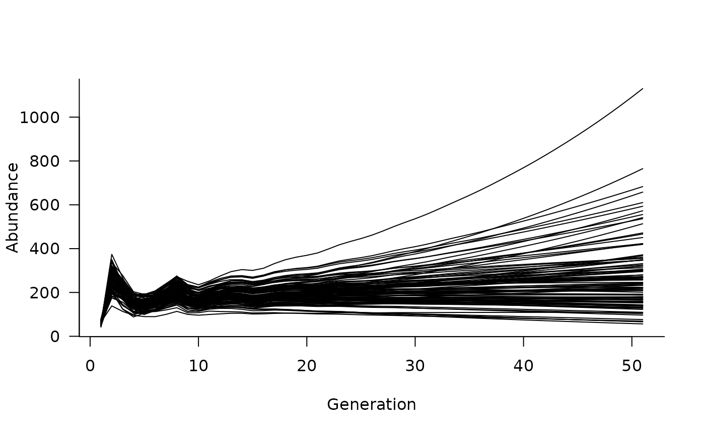

Define population dynamics for multiple species from
a set of single-species dynamics objects and
defined pairwise interactions.
Value
multispecies object containing a multispecies matrix
population model; for use with simulate
Examples
# define population matrices for three species
sp1_mat <- rbind(
c(0, 0, 2, 4, 7), # reproduction from 3-5 year olds
c(0.25, 0, 0, 0, 0), # survival from age 1 to 2
c(0, 0.45, 0, 0, 0), # survival from age 2 to 3
c(0, 0, 0.70, 0, 0), # survival from age 3 to 4
c(0, 0, 0, 0.85, 0) # survival from age 4 to 5
)
sp2_mat <- rbind(
c(0, 0, 4), # reproduction from 3 year olds
c(0.25, 0, 0), # survival from age 1 to 2
c(0, 0.45, 0) # survival from age 2 to 3
)
sp3_mat <- rbind(
c(0, 0, 2, 4, 7, 10), # reproduction from 3-6 year olds
c(0.25, 0, 0, 0, 0, 0), # survival from age 1 to 2
c(0, 0.45, 0, 0, 0, 0), # survival from age 2 to 3
c(0, 0, 0.70, 0, 0, 0), # survival from age 3 to 4
c(0, 0, 0, 0.85, 0, 0), # survival from age 4 to 5
c(0, 0, 0, 0, 0.75, 0) # survival from age 5 to 6
)
# define population dynamics objects for each species
sp1_dyn <- dynamics(sp1_mat)
sp2_dyn <- dynamics(sp2_mat)
sp3_dyn <- dynamics(sp3_mat)
# define multispecies interactions as masks/functions
# - species 1 influencing transition probabilities of species 3
mask_1v3 <- transition(sp3_mat)
# basic Beverton-Holt function
fun_1v3 <- function(x, n) {
# n is the population vector of the source population (sp 1)
x / (1 + x * sum(n[3:5]) / 100) # focus on adults
}
# - species 3 influencing reproduction of species 2
mask_3v2 <- reproduction(sp2_mat, dims = 3)
# basic Ricker function
fun_3v2 <- function(x, n) {
# n is the population vector of the source population (sp 3)
x * exp(1 - sum(n[1:2]) / 50) / exp(1) # focus on juveniles
}
# combine masks and functions into pairwise_interaction objects
sp_int1v3 <- pairwise_interaction(sp3_dyn, sp1_dyn, mask_1v3, fun_1v3)
sp_int3v2 <- pairwise_interaction(sp2_dyn, sp3_dyn, mask_3v2, fun_3v2)
# compile a multispecies dynamics object
multisp_dyn <- multispecies(sp_int1v3, sp_int3v2)
# simulate
sims <- simulate(multisp_dyn, nsim = 100)
# and can plot these simulated trajectories for each species
plot(sims, which = 1)
